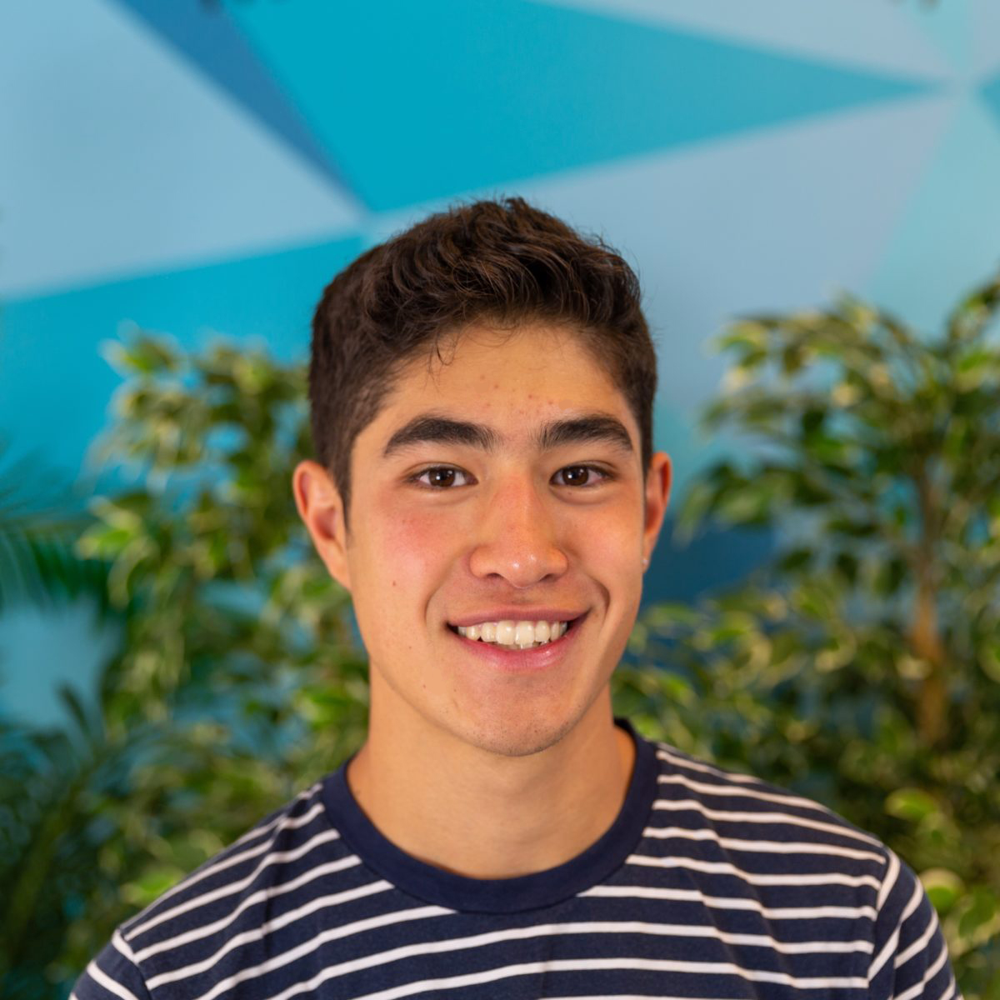

 Andre Assadi is the founder of the Berkeley Hackclub, a chapter of the larger affiliation Hackclub . He has worked as an intern for 2 months in 2018 at 3DR , where he built a low-resolution stitching algorithm. Andre has published three applications to the iOS app store. He is currently a senior in high school, and is interested in website development.
A low-resolution stitching algorithm made over the course of a summer at 3D Robotics. The program was meant to be integrated into their mobile iOS app ‘Site Scan’. I experimented with various native frameworks and OpenCV.
This was a game I built my sophomore year in highschool and published. The purpose was to dodge asteroids and shoot down enemy spaceships. The graphics were built by a friend, Gaetan Pelletey. Star Spec received over 3k downloads.
This was a satirical app meant to make fun of some of Donald Trump's outrageous sayings. The app featured 150+ quotes and tweets. It was published to the app store.
Affinity was an application built at the 100Hacks 2017 Hackathon in SF. It won second place. The app was meant to bridge the gap between the excess of food waste in California and those in need through a simple but handy user-interface.
A project I worked on nearing summer of sophomore year. The game had astounding graphics. The purpose was to dodge the incoming obstacles while avoiding hitting the ground.
An app that I worked on my junior year with my brother. The app was essentially a marketplace for wooden tiles. We came up with a production procedure and back-end infrastructure. I built the iOS app and published it to the app store.
I built homestack to help build a community at high schools by connecting students through their classes where they could communicate with one another and post photos of confusing assignments.
This was a multiplayer game built using java GUI, Gradle, and Firebase. The game was upvoted as the best Java project in my computer science class. The point of the game was to avoid hitting the obstacles and catch your opponent.
I built a $200 iMac that worked as good as $2000 iMac. I was inspired by a youtuber and bought an HP Compaq Pro 6300, and with a bit of research and hacking I was able to boot into MacOS. This is called building a hackintosh.